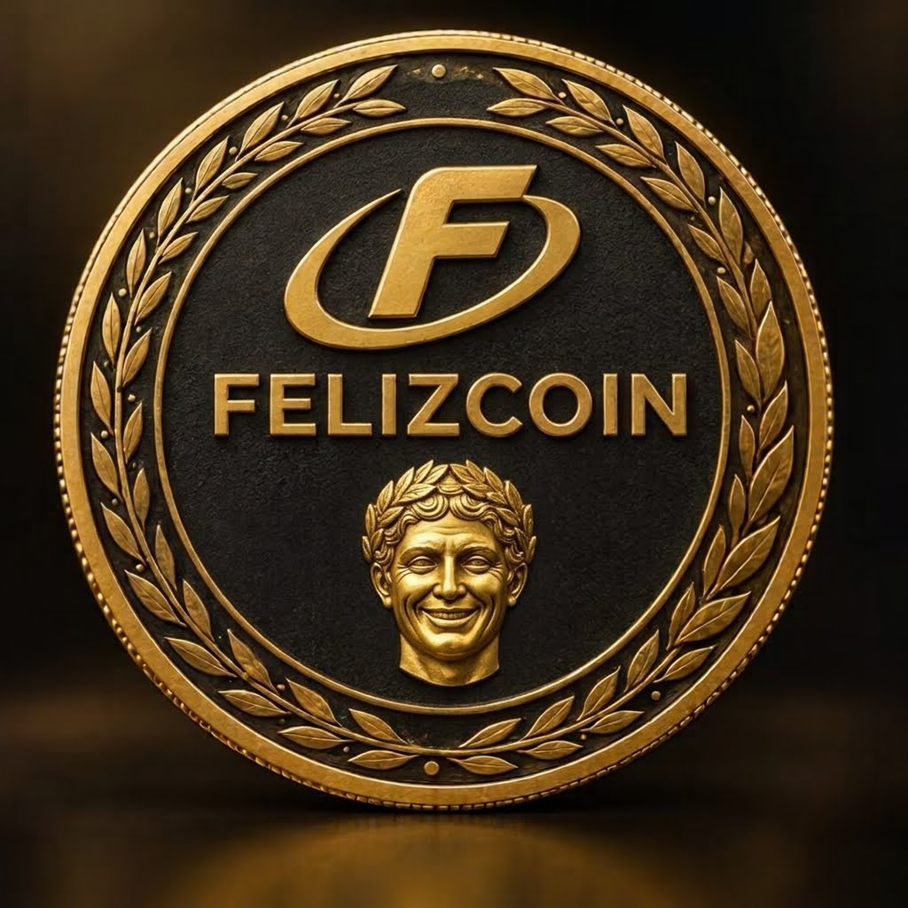

Supply fixo
25.000.000 FELIZ

Projeto comunitário em fase inicial. Sem promessa de retorno financeiro.
Materiais oficiais gratuitos para apoiadores e para divulgação responsável do projeto.
O kit é gratuito. Nenhum pagamento é necessário.
Uma fase tem 5 perguntas. Responda rápido, sem tempo para pesquisar.
Você terá 12 segundos por pergunta. Cada erro ou tempo esgotado encerra a fase.
A liquidez é pequena e o preço pode variar muito. O token não está listado na Binance Exchange, não tem garantia de valorização e pode perder todo o valor. Verifique sempre o mint acima antes de negociar.